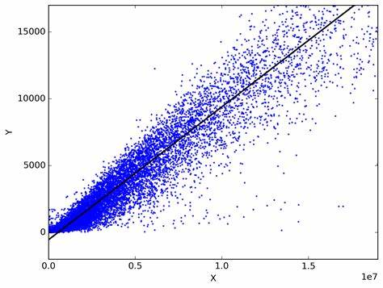
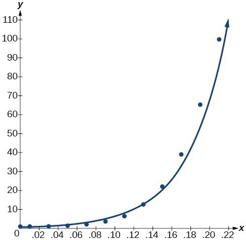
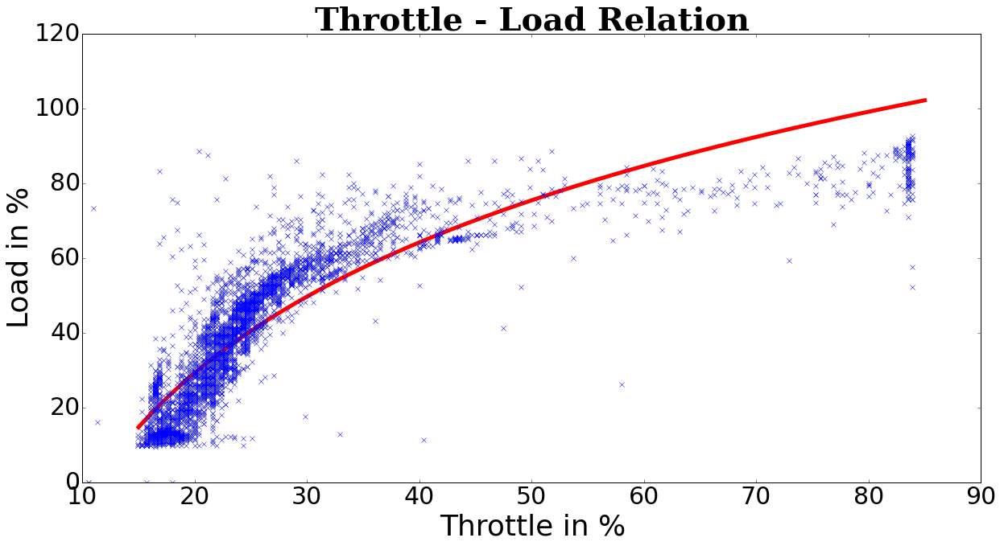
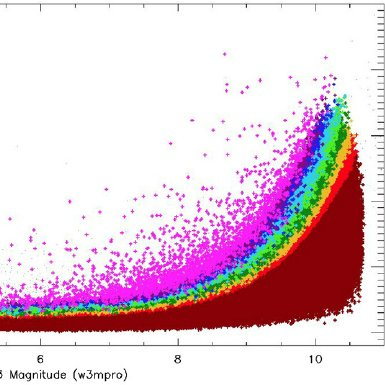
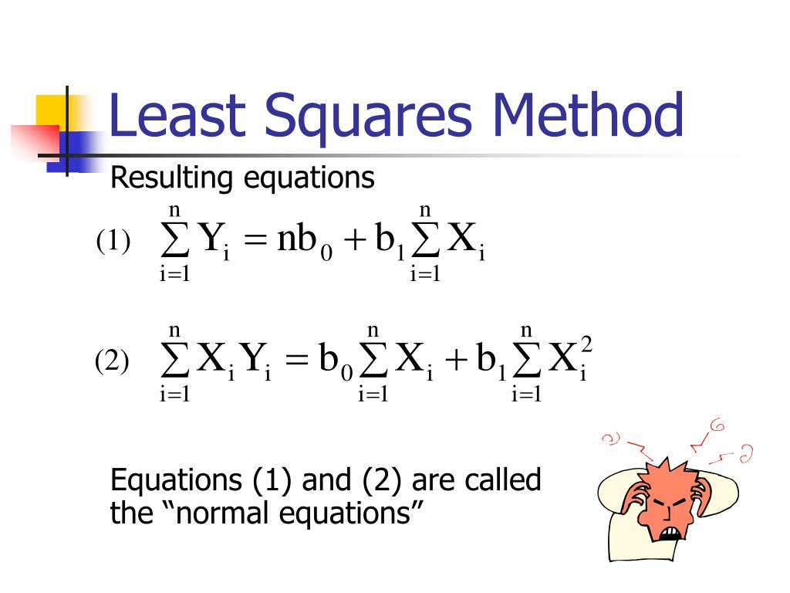

What is Curve Fitting ?
Curve fitting in mathematics refers to the process of finding a mathematical function (or curve) that best approximates a set of data points. This technique is used to model and understand relationships between variables, make predictions, and interpolate or extrapolate data. In mathematics, curve fitting typically involves the following key concepts:
- Data Points: You start with a set of data points, usually represented as (x, y) pairs, where x is the independent variable (input) and y is the dependent variable (output).
- Mathematical Model: You choose a mathematical function or equation that you believe might describe the relationship between the variables. The choice of the function depends on the nature of the data and the problem you are trying to solve.
- Parameters: The mathematical model typically has parameters (coefficients) that need to be determined. These parameters determine the shape, position, and behavior of the curve.
- Fitting Process: The goal is to find the values of the model's parameters that minimize the difference between the predicted values of the model and the actual data points. This is usually done by minimizing the sum of squared differences (least squares) between the observed and predicted values.
- Goodness of Fit: To assess how well the curve fits the data, various statistical measures are often used. These measures include the coefficient of determination (R-squared), root mean square error (RMSE), and others.
- Visual Inspection: Visual inspection of the fitted curve compared to the data points is also essential to ensure that the curve captures the essential features of the data.
Types of Curve Fitting :
Common Types of Curve Fitting:
- Linear Regression: This is one of the simplest forms of curve fitting, where a linear equation (a straight line) is fitted to the data. The equation is typically of the form y = mx + b. 
- Polynomial Regression: Here, a polynomial equation of degree n is fitted to the data. For example, a quadratic polynomial regression might be y = ax^2 + bx + c. 
- Exponential and Logarithmic Regression: These forms are used when data exhibits exponential growth or decay or follows a logarithmic pattern. 
- Power Law Regression: This form is used when data follows a power-law distribution, such as y = ax^b. 
- Nonlinear Regression: When none of the above models fit the data adequately, more complex nonlinear equations can be used, and specialized techniques are applied to estimate the parameters.
.jpg)
Least square Method:
Fitting a st. line y=bo+b1x consider a set of n values (x,y) for fitting a st.line y=b0+b1x where b0&b1 are constants to be determined by the method of least squares we define the parameters a&b such that the sum of squares is minimum(least) 
Applications of Curve fitting :
Curve fitting, the process of finding a mathematical function that best represents a set of data points, has a wide range of applications across various fields. Here are some notable applications:
- Physical Sciences:
- Physics: Fitting curves to experimental data to extract physical constants or model relationships (e.g., Newton's laws, quantum mechanics).
- Chemistry: Modeling reaction kinetics, equilibrium constants, and spectroscopic data.
- Engineering:
- Electrical Engineering: Fitting curves to voltage-current characteristics of components.
- Mechanical Engineering: Analyzing stress-strain relationships in materials.
- Economics and Finance:
- Econometrics: Modeling economic data to understand relationships between variables (e.g., supply and demand curves, Phillips curve).
- Finance: Analyzing financial time series data for asset pricing and risk assessment.
- Biology and Medicine:
- Pharmacokinetics: Modeling drug concentration-time profiles for dosing optimization.
- Genomics: Fitting curves to gene expression data for gene regulation studies.
- Epidemiology: Modeling disease spread and vaccine effectiveness.
- Environmental Sciences:
- Climate Science: Analyzing temperature and atmospheric data to understand climate trends.
- Ecology: Modeling population dynamics, species interactions, and biodiversity.
- Market Research and Business:
- Marketing: Analyzing consumer data to understand buying behavior and predict market trends.
- Operations: Optimizing supply chain operations through demand forecasting.
- Image and Signal Processing:
- Computer Vision: Fitting curves to image data for object recognition and tracking.
- Audio Processing: Modeling sound waves for speech and music analysis.
- Quality Control and Manufacturing:
- Manufacturing: Using curve fitting to monitor and optimize manufacturing processes.
- Quality Assurance: Detecting defects in products by fitting curves to inspection data.
- Geosciences:
- Geology: Analyzing rock and sediment data to understand geological history.
- Seismology: Modeling seismic waves to study earthquake behavior.
- Social Sciences:
- Psychology: Analyzing reaction time data in cognitive psychology experiments.
- Sociology: Modeling social trends and behaviors using survey data.
- Astronomy:
- Light Curve Analysis: Fitting curves to variations in brightness of celestial objects to study astronomical phenomena.
- Machine Learning and Artificial Intelligence:
- Feature Engineering: Creating new features by fitting curves to raw data for use in machine learning models.
- Deep Learning: Neural networks can be seen as complex curve-fitting models.
- Curve fitting is a versatile tool for data analysis and modeling in numerous domains. It allows researchers, analysts, and professionals to make informed decisions, derive insights, and develop predictive models based on existing data. The choice of the fitting function and the quality of the fit are critical aspects of the analysis process.